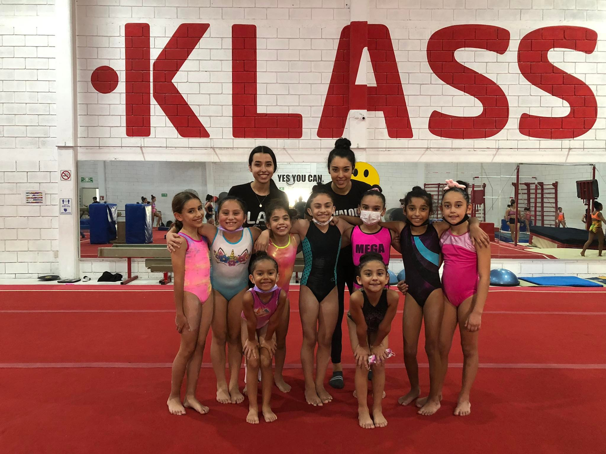
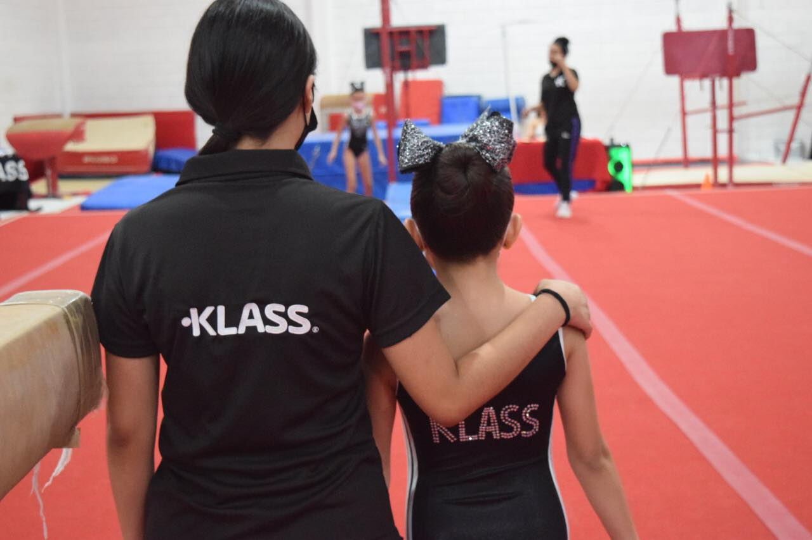

Mis actividades favoritas por hacer es escuchar musica, dormir, pasar tiempo con mi familia/amigos. tambien disfruto mucho dar clases de gimnasia, por las tardes voy a un gimnasio
 Mas sobre la Gimnasia :3
La gimnasia es una actividad física destinada al fortalecimiento y mantenimiento de una buena forma física a través de un conjunto de ejercicios establecidos. Algunas modalidades de gimnasia se practican como deporte de competición en el que se ejecutan secuencias reglamentadas de ejercicios que requieren equilibrio, fuerza, flexibilidad, agilidad, resistencia y control. El organismo mundial encargado de regular las disciplinas competitivas es la Federación Internacional de Gimnasia.